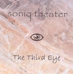

Home Artist links Label link

Soniq Theater - The Third Eye
| Artist: | Soniq Theater |
| Title: | The Third Eye |
| Label: | Independent |
| Length(s): | 59 minutes |
| Year(s) of release: | 2003 |
| Month of review: | [11/2003] |
Line up
Alfred Mueller - all instruments
Tracks
| 1) | The Anger Of Zeus | 4.33
|
| 2) | Bilbo Is Back | 2.35
|
| 3) | Vamos A Ver | 3.58
|
| 4) | Skydiver | 5.07
|
| 5) | Once Upon A Time | 2.09
|
| 6) | The Coronation | 3.46
|
| 7) | Inner Visions | 7.32
|
| 8) | Meta Luna | 4.55
|
| 9) | Sleeping Beauty | 5.41
|
| 10) | Desperado | 4.57
|
| 11) | Lumania | 10.42
|
| 12) | Peace Piece | 3.12
|
Summary
The Third Eye is the second album by one-man electronic project Soniq Theater.
The music
As you might expect from an electronic project, the music is, well, rather electronically directed. His use of synths is rather varied, which precludes all tracks from sounding the same, as does the use of sampled guitars and synths. This can't hide, however, that this is an electronic record. And of course, there's the dreaded drum box.
Vamos A Ver features sampled vocals (by Suzann) sounding off key and more like a cry for help than anything else. Some of the tracks, such as The Coronation have a rather American feel, sort of the meandering stuff. Then there's the European type stuff, at times happy-go-bounce, at times more melodiously Tangerine Dream like. Then there are a couple of moments where the keys sound rather like early day Mark Kelly. At the end of the day, though, it can't be ignored that the drums sound crappy and the synths are a little too thin to give a full sound. Beside that, instrumental diversity doesn't make up for flawed compositions.
Conclusion
The Third Eye is an electronic album, and might as such find the appraisal of the die hard EM fan, but even then it has to be said that this album shows nothing new, original, strange or interesting. Your basic prog fan will at best fall asleep, in case of more emotional sets of mind chagrin and anger are the most likely. Chagrin was the one for me.
© Roberto Lambooy